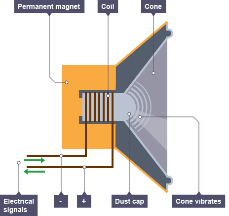
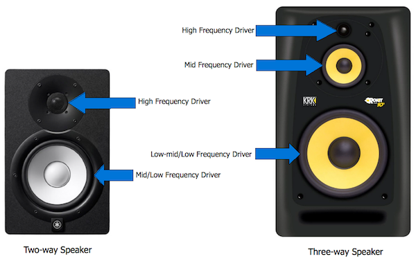
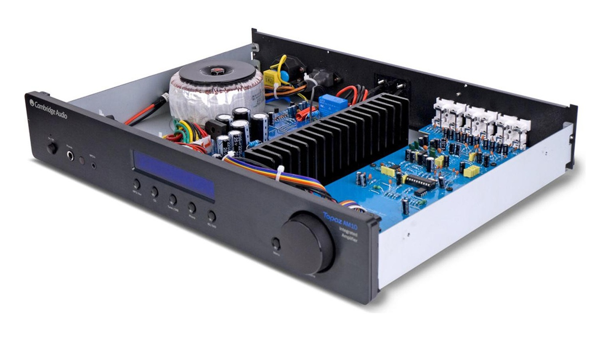
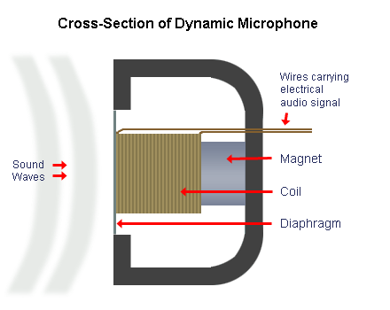
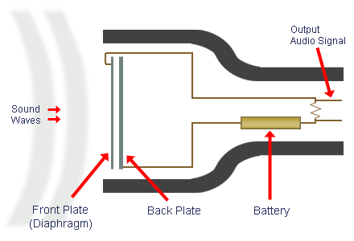

The Loudspeaker
The fundamental purpose of any speaker is to convert an electric signal into sound waves. Speakers enable not only amplification of sound (like within hearing aids, megaphones, or guitar amplifiers) but also listening to any audio that's been recorded physically or digitally (a process which will be covered in a later section).
Here's a diagram of a basic loudspeaker:
The most common loudspeaker contains a dynamic driver, in which an electromagnetic coil of wire, known as the voice coil, is centrally positioned between the gap of a permanent magnet surrounding it, creating a magnetic field. When an electrical current oscillates from positive to negative through the voice coil, it moves up and down while attached to the diaphragm, or cone. This longitudinal movement of the cone produces sound waves.
Types of Loudspeakers
The frequency at which the current oscillates from positive to negative matches that of the sound the cone produces. As you've learned in Topic 2, many sounds (and all music) occupy almost the entire audible frequency spectrum. Because of this, one single loudspeaker alone isn't capable of accurately reproducing this wide range of frequencies. Therefore, there are several different sizes of loudspeakers that each cover a general frequency range:
-
Tweeter (Highs) [2-20kHz]
-
Squawker (Mid-Range) [250-2,000Hz]
-
Woofer (Bass) [60-250Hz]
-
Subwoofer (Sub) [20-60Hz]
Each of these different loudspeakers (somewhat interestingly named after their animal counterparts) is sized accordingly to meet their respective frequency output. Tweeters are usually around 1 inch in diameter because of the high frequencies the cone must oscillate at; anything wider and the speaker's output would lack clarity and detail captured in the high-end frequencies.
Alternatively, a subwoofer can typically range from 10-18 inches in diameter in order to move much larger amounts of air at their lower frequencies. Woofers and subwoofers are usually always enclosed in their own housing to prevent possible distortion and to insure there is an adequate amount of air supplied to the loudspeaker through the placement of air ports.
Most speakers house two or three drivers within one unit in order to produce the full frequency spectrum. This can include a tweeter and a woofer, or a tweeter, mid-range driver, and a woofer. These types of speakers are referred to as two-way and three-way, respectively. These kinds of loudspeakers are typically found within music studios, home theaters, or hi-fi stereo systems.
Amplifiers
The electrical signals that travel through the wires into loudspeakers are actually too weak to power the drivers inside. Therefore, all speakers (from the speaker in your phone to those in movie theaters) require amplification in order to sufficiently produce sound. This is where amplifiers enter the mix — these devices serve the simple purpose of boosting an audio signal so it has a larger current. However, it is important that this simple functionality is done very precisely in order to maintain high quality output from the loudspeaker.
Without getting too technical, let's take a look at what goes on inside an amplifier.
First, the input circuit of the audio signal in the form of an electrical current runs into the amplifier. An output circuit is created by the power supply found within the amplifier; all amplifiers require an outside source of power. The current of the input circuit is passed through transistors, one of the main components, which actually amplify the voltage of the incoming electric signal. This modified current then passes out of the amplifier and is input directly into the loudspeaker.
Beyond small speakers, boosting audio signals to appropriate volume levels is simply too much work for one single amplifier to put out. Instead, a pre-amplifier is typically utilized in order to send an already boosted signal to a larger, more capable amplifier.
Microphones
Now that we've covered the basics of audio reproduction, it's about time we examine how audio is captured and recorded through microphones, or mics for short. Conveniently enough, the process is almost exactly identical to how loudspeakers produce sound — just done in reverse. Below are explanations of how audio is captured by two of the most common models of microphones.
The Dynamic Mic
Dynamic mics are the most common type of microphone used for on-stage musical performances and speeches. They are durable, good at isolating input audio within a noisy environment, and don't require an external power supply. Here's a diagram:
When sound waves hit the diaphragm of the mic, the attached voice coil vibrates back and forth in tandem. As it moves up and down through the magnetic field of the surrounding magnet, positive and negative current is created to form the audio signal output. As you can tell, this mechanism is the complete reversal of a dynamic loudspeaker covered previously. Similarly, often times dynamic mics have specialized diaphragms in order to more accurately capture frequencies within a certain range (like for vocals or bass).
The Condenser Mic
Condenser mics, on the other hand, are generally made specifically for recording audio in a studio environment. This is due to their increased sensitivity, wider range of frequency response and wider dynamic range. They also require a source of power to operate.
Instead of utilizing a magnetic voice coil, the power supply creates an electrical field between the front and back plates. Incoming sound waves will cause the diaphragm on the front plate to vibrate back and forth, therein changing the electrical field and creating an electrical audio signal.
Condenser mics, as a result, can be a lot more sensitive to incoming sound waves. If the amplitude of waves hitting the diaphragm are too large and the front and back plate make contact, the microphone is at risk of being damaged. Therefore, producers must use specific condenser mics rated at higher volume levels when recording loud instruments like drums and guitar amplifiers.
{kind=link}
{kind=link}
{kind=link}
{kind=link}
{kind=link}